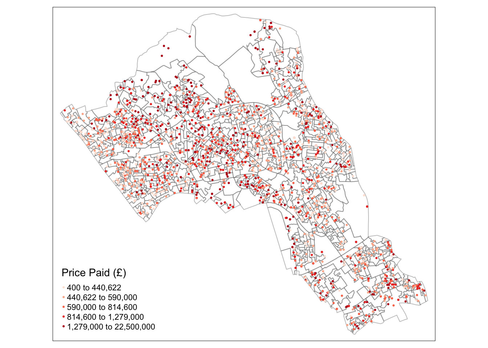
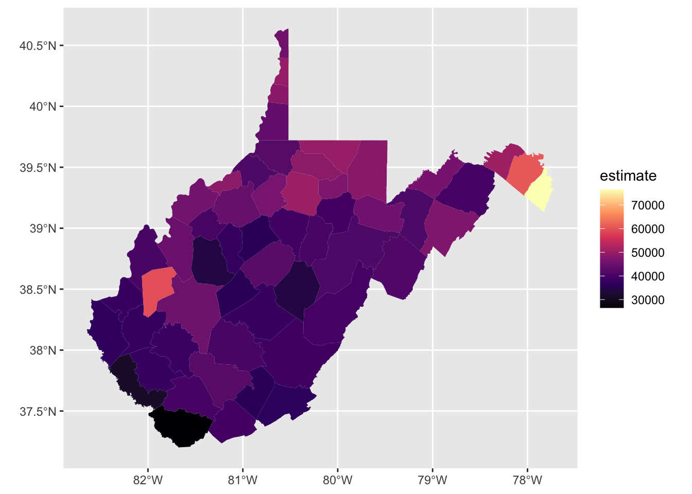
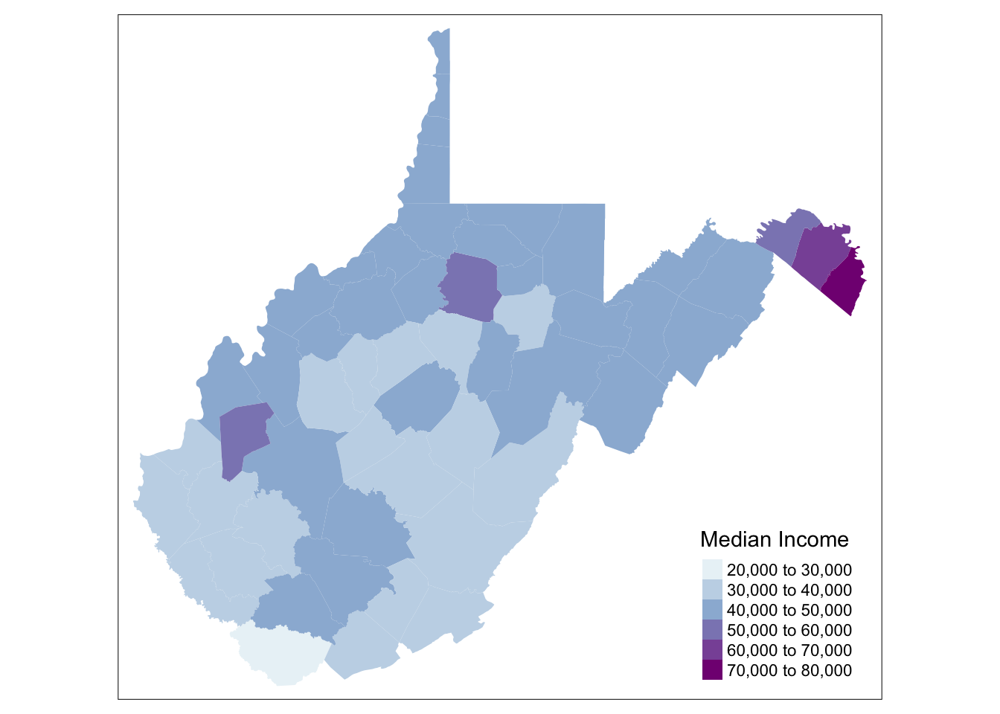

Lab 4. Principles of Spatial Scale, Part 2
Overview
In this practical, we will continue to explore how coal mining impacts West Virginia in a contemporary context. Extending from our work last week exploring county-level variations, this week’s objectives will be to:
- learn some basics of R
- wrangle Census data
- access data through the Web
- compare data between sources & scales
Research Question
We have been focusing on coal mining jobs at the county-scale. This is partly due to a data limitation, as we know the exact number of jobs for coal-mining at the county level. However, is the scale of coal-mining at the county level, or below? Will there be more variation at a smaller area of resolution? Are jobs equally distributed throughout the county, or will they tend to clump in certain areas within a county – and if so, why would that be the case?
In other words: Is coal mining spatially homogeneous throughout the state, or throughout different counties – or is it spatially heterogeneous, with “clumping” behaviors? If there is a spatially heterogeneous pattern, what may tie coal mining jobs to a certain place? Is there a pattern of spatial dependence?
Environment Setup
For this lab, you’ll need to have R and RStudio downloaded and installed on your system. You should be able to install packages, and have very basic familiarity with R following intro-level tutorials provided through installation guides. You should also know how to find the address to a folder on your computer system.
We will work with the following libraries, so please be sure to install:
- sf
- tmap
- RColorBrewer
- tidyverse
- tidycensus
Coding snippets from https://walkerke.github.io/ and https://data.cdrc.ac.uk were used in the development of this lab practical.
Need for finer data
In order to examine this further, we need to look at data at a smaller areal resolution. While we don’t have an exact number of coal mining jobs below county, the American Community Survey (ACS) does provide an approximation of mining grouped within an industry variable at the census-tract level. Census tracts are smaller units used by the Census to track populations, and encompass a population between 2,500 to 8,000 people. When using tract-level files from the ACS, it is recommended to only use 5-year estimates because of the large margins of error in smaller year samples.
Census Data
The mining data we used last week indicated exact counts of employees working within the coal mining industry at the county level, by year. If we wanted to find similar data using the Census, the closest variable available would be Mining jobs as part of the industry category “Agriculture, forestry, fishing and hunting, and mining” at the county or tract level within the American Community Survey (ACS 5-year estimate). Before we explore this data at the tract level, let’s first compare the county-level data between sources: Bureau of Labor Statistics (BLS) and ACS.
We will first work with ACS data provided as a CSV file format, to be joined to the master West Virginia county shapefile we generated last week.
Working Directory Setup
To do this, we first need to ensure we have a working directory where your code and data reside. Make sure that your R script, CSV file provided, and WV county shapefile are all in the same folder. Identify the address to this folder.
Now we can set up our working directory. Again, this will be the folder on your computer system where you are storing script and data for this lab. Ensure that you are working from the script from this folder.
# Set working directory
#setwd("/Users/maryniakolak/Desktop/WVCoal")Load Libraries
Before loading our data, we will need to load the required packages. While we can load a CSV using base R capabilities, we need the sf package to load spatial data.
If you have not installed sf, do so now. You can uncomment the line of code to install, but then re-comment it so you don’t install the package more than once. We also load the tidyverse package to enable some useful data wrangling tools.
# install.packages("sf")
library(sf)## Linking to GEOS 3.7.2, GDAL 2.4.2, PROJ 5.2.0library(tidyverse)## ── Attaching packages ──────────────── tidyverse 1.3.0 ──## ✓ ggplot2 3.3.0 ✓ purrr 0.3.4
## ✓ tibble 3.0.1 ✓ dplyr 0.8.5
## ✓ tidyr 1.0.3 ✓ stringr 1.4.0
## ✓ readr 1.3.1 ✓ forcats 0.5.0## ── Conflicts ─────────────────── tidyverse_conflicts() ──
## x dplyr::filter() masks stats::filter()
## x dplyr::lag() masks stats::lag()Load Data
Next, load the census data and read in the shapefile of your counties file. While it reads in as a shapefile, the data structure gets changed to a “simple features” dataset that inludes geometry as an additional column. This is a key feature of the sf package.
# Load new census data you plan to join.
Census.Data <-read.csv("ACS_15_5YR_DP03.csv")
# Load the output area shapefiles
County.Areas<- st_read("WV_Counties.shp")## Reading layer `WV_Counties' from data source `/Users/HIPark/Documents/micrometcalf/Intro2GIS/book/WV_Counties.shp' using driver `ESRI Shapefile'
## Simple feature collection with 55 features and 46 fields
## geometry type: POLYGON
## dimension: XY
## bbox: xmin: 355916.7 ymin: 4117439 xmax: 782847.1 ymax: 4498773
## CRS: 26917View Data
We can quickly view the attributes. One way is to use the glimpse function. Uncomment this line in your script, and view the data.
# View the attributes associated with each county
glimpse(County.Areas)## Rows: 55
## Columns: 47
## $ FIPSSTCO <chr> "54109", "54107", "54105", "54103", "54101", "54099", "540…
## $ STATE <chr> "West Virginia", "West Virginia", "West Virginia", "West V…
## $ COUNTY <chr> "Wyoming", "Wood", "Wirt", "Wetzel", "Webster", "Wayne", "…
## $ POP2000 <int> 25708, 87986, 5873, 17693, 9719, 42903, 23404, 9592, 7321,…
## $ WHITE <int> 25345, 85627, 5788, 17502, 9639, 42382, 22981, 9530, 7237,…
## $ BLACK <int> 161, 887, 17, 15, 1, 54, 144, 2, 5, 134, 280, 34, 14, 302,…
## $ AMERI_ES <int> 31, 188, 12, 17, 7, 99, 39, 5, 14, 31, 33, 32, 28, 46, 147…
## $ ASIAN <int> 21, 448, 6, 57, 6, 86, 72, 8, 1, 27, 12, 35, 13, 106, 568,…
## $ HAWN_PI <int> 0, 35, 0, 4, 1, 8, 3, 1, 9, 6, 5, 0, 0, 4, 13, 11, 5, 0, 0…
## $ OTHER <int> 19, 124, 6, 5, 1, 35, 30, 3, 7, 10, 13, 29, 11, 45, 99, 67…
## $ MULT_RACE <int> 131, 677, 44, 93, 64, 239, 135, 43, 48, 102, 103, 93, 71, …
## $ HISPANIC <int> 135, 514, 18, 74, 36, 202, 137, 41, 18, 95, 71, 104, 49, 1…
## $ MALES <int> 12649, 42246, 2939, 8586, 4783, 20993, 11354, 4686, 3570, …
## $ FEMALES <int> 13059, 45740, 2934, 9107, 4936, 21910, 12050, 4906, 3751, …
## $ AGE_UNDER5 <int> 1467, 5089, 329, 1007, 500, 2471, 1248, 503, 353, 864, 604…
## $ AGE_5_17 <int> 4291, 15139, 1163, 3197, 1732, 7551, 4030, 1728, 1204, 282…
## $ AGE_18_21 <int> 1257, 4181, 262, 715, 456, 2257, 2092, 378, 294, 749, 567,…
## $ AGE_22_29 <int> 2535, 8122, 514, 1463, 887, 4288, 2199, 794, 564, 1496, 11…
## $ AGE_30_39 <int> 3253, 12383, 894, 2348, 1222, 5882, 2945, 1268, 1024, 2342…
## $ AGE_40_49 <int> 4648, 13642, 903, 2699, 1579, 6292, 3446, 1523, 1078, 2565…
## $ AGE_50_64 <int> 4671, 15822, 1045, 3403, 1861, 7751, 3995, 1819, 1490, 271…
## $ AGE_65_UP <int> 3586, 13608, 763, 2861, 1482, 6411, 3449, 1579, 1314, 2539…
## $ MED_AGE <dbl> 40.1, 39.3, 37.9, 40.4, 40.4, 38.4, 37.4, 40.8, 42.0, 39.1…
## $ MED_AGE_M <dbl> 39.2, 38.0, 37.1, 39.4, 39.6, 37.0, 36.4, 40.3, 40.8, 37.7…
## $ MED_AGE_F <dbl> 41.0, 40.6, 38.6, 41.5, 41.2, 39.6, 38.4, 41.3, 43.2, 40.5…
## $ HOUSEHOLDS <int> 10454, 36275, 2284, 7164, 4010, 17239, 8972, 3836, 3052, 6…
## $ AVE_HH_SZ <dbl> 2.45, 2.39, 2.56, 2.45, 2.41, 2.48, 2.45, 2.47, 2.35, 2.47…
## $ HSEHLD_1_M <int> 1046, 3856, 229, 723, 467, 1654, 905, 350, 318, 658, 693, …
## $ HSEHLD_1_F <int> 1501, 5976, 277, 1118, 597, 2501, 1354, 538, 512, 952, 914…
## $ MARHH_CHD <int> 2493, 7682, 624, 1643, 866, 4090, 2130, 904, 657, 1466, 10…
## $ MARHH_NO_C <int> 3710, 12022, 780, 2491, 1355, 6112, 3088, 1450, 1112, 2099…
## $ MHH_CHILD <int> 198, 664, 56, 152, 91, 285, 185, 72, 53, 134, 106, 135, 74…
## $ FHH_CHILD <int> 545, 2275, 123, 372, 239, 997, 478, 185, 115, 355, 262, 31…
## $ FAMILIES <int> 7705, 24898, 1700, 5080, 2816, 12648, 6353, 2833, 2121, 44…
## $ AVE_FAM_SZ <dbl> 2.89, 2.88, 2.97, 2.92, 2.89, 2.92, 2.92, 2.89, 2.84, 2.95…
## $ HSE_UNITS <int> 11698, 39785, 3266, 8313, 5273, 19107, 10751, 4780, 4634, …
## $ URBAN <int> 0, 0, 0, 0, 0, 0, 0, 0, 0, 0, 0, 0, 0, 0, 0, 0, 0, 0, 0, 0…
## $ RURAL <int> 0, 0, 0, 0, 0, 0, 0, 0, 0, 0, 0, 0, 0, 0, 0, 0, 0, 0, 0, 0…
## $ VACANT <int> 1244, 3510, 982, 1149, 1263, 1868, 1779, 944, 1582, 805, 1…
## $ OWNER_OCC <int> 8713, 26609, 1898, 5625, 3167, 13466, 6883, 3209, 2520, 50…
## $ RENTER_OCC <int> 1741, 9666, 386, 1539, 843, 3773, 2089, 627, 532, 1287, 11…
## $ Mines15 <dbl> NA, NA, NA, NA, NA, NA, NA, NA, NA, NA, NA, NA, NA, NA, 22…
## $ AveEmp15 <dbl> NA, NA, NA, NA, NA, NA, NA, NA, NA, NA, NA, NA, NA, NA, 17…
## $ Wages15 <dbl> NA, NA, NA, NA, NA, NA, NA, NA, NA, NA, NA, NA, NA, NA, 13…
## $ AveWkWg15 <dbl> NA, NA, NA, NA, NA, NA, NA, NA, NA, NA, NA, NA, NA, NA, 14…
## $ WgEmp15 <dbl> NA, NA, NA, NA, NA, NA, NA, NA, NA, NA, NA, NA, NA, NA, 77…
## $ geometry <POLYGON [m]> POLYGON ((478582 4150782, 4..., POLYGON ((463072.1…We can also use the head() function, which shows the top 5 rows. Uncomment this in your script, and view the data.
# View the attributes associated with each county
# head(Census.Data)If we want to see the dimensions of the data, we can use the dim() function. I also like the str() function as it gives an overview of what type of data we have from a data structure perspective. I comment out the str() function here as it generates a very long output, but please try for yourself!
From either of these we can see that there 55 observations (counties), and 551 variables. In other words, 55 rows x 551 columns.
# View the attributes associated with each county
dim(Census.Data)## [1] 55 551#str(Census.Data)Subset Data
This ACS dataset – a raw file from the DP03: Selected Economic Characteristics summary profile – includes a lot of variables. To work with this we need to know exactly what variabes we need. You would need the metadata document that comes with the summary profile to identify that. In this lab, I will tell you which variables we’re interested in.
HC03_VC50: Percent; INDUSTRY - Civilian employed population 16 years and over - Agriculture, forestry, fishing and hunting, and mining
HC01_VC85: Estimate; INCOME AND BENEFITS (IN 2010 INFLATION- ADJUSTED DOLLARS) - Median household income (dollars).
In other words, we need to generate a subset of the raw ACS file to include the unique numerical County geographic ID, and rename the variables of interest.
- County ID -> named “GEO.id2” in dataset
- HC03_VC50 -> rename “AgFHM15”
- HC01_VC85 -> rename “MedInc15”
Let’s further subset the data to make a new, cleaner dataset. We first generate a list of variables that we want to keep. Note that “GEO.id2” is the unique code that indicates a county. We will use this as our “key” to merge with our master spatial file.
var <- c("GEO.id2","HC01_VC85","HC03_VC50")Next, we extract only the variables of interest from the ACS dataset. We call this new object “Census.Subset.” View the data to ensure you’ve subset correctly.
Also note that there are multiple ways to subset data in R – here we use a simple base R approach. The tidyverse package offers even more elegant options.
Census.Subset<- (Census.Data[var])
glimpse(Census.Subset)## Rows: 55
## Columns: 3
## $ GEO.id2 <int> 54001, 54003, 54005, 54007, 54009, 54011, 54013, 54015, 540…
## $ HC01_VC85 <int> 37066, 55239, 39958, 32750, 46215, 38344, 35568, 31325, 399…
## $ HC03_VC50 <dbl> 6.2, 1.2, 23.4, 10.5, 1.7, 1.0, 12.5, 10.7, 16.7, 8.3, 8.5,…Next, we rename the second and third columns (identified as 2 through 3) using new names. Again, there are many ways to do this in R – this is just one approach.
names(Census.Subset)[2:3]<- c("MedInc15", "AgMnJb15")
glimpse(Census.Subset)## Rows: 55
## Columns: 3
## $ GEO.id2 <int> 54001, 54003, 54005, 54007, 54009, 54011, 54013, 54015, 5401…
## $ MedInc15 <int> 37066, 55239, 39958, 32750, 46215, 38344, 35568, 31325, 3997…
## $ AgMnJb15 <dbl> 6.2, 1.2, 23.4, 10.5, 1.7, 1.0, 12.5, 10.7, 16.7, 8.3, 8.5, …Merge data to Master
Now that you’ve cleaned and named the census data showing our mining proxies, we can merge to our Master spatial file.
Note that we are joining using key “FIPSSTCO” from the county shapefile, and “GEO.id2” from the census dataset. Look at the data to make sure it joined correctly.
# Joins data to the shapefile
WV_county <- merge(County.Areas, Census.Subset, by.x="FIPSSTCO", by.y="GEO.id2")
head(WV_county)## Simple feature collection with 6 features and 48 fields
## geometry type: POLYGON
## dimension: XY
## bbox: xmin: 368368.2 ymin: 4179711 xmax: 773040.2 ymax: 4472141
## CRS: 26917
## FIPSSTCO STATE COUNTY POP2000 WHITE BLACK AMERI_ES ASIAN HAWN_PI
## 1 54001 West Virginia Barbour 15557 15147 77 111 40 3
## 2 54003 West Virginia Berkeley 75905 70392 3558 186 350 17
## 3 54005 West Virginia Boone 25535 25160 167 31 18 4
## 4 54007 West Virginia Braxton 14702 14411 101 51 16 7
## 5 54009 West Virginia Brooke 25447 24913 216 25 87 9
## 6 54011 West Virginia Cabell 96784 90370 4150 174 749 38
## OTHER MULT_RACE HISPANIC MALES FEMALES AGE_UNDER5 AGE_5_17 AGE_18_21
## 1 19 160 73 7646 7911 825 2752 928
## 2 428 974 1156 37784 38121 5024 14505 3558
## 3 17 138 117 12471 13064 1608 4317 1264
## 4 12 104 65 7444 7258 779 2567 610
## 5 22 175 99 12182 13265 1278 3922 1541
## 6 196 1107 654 46229 50555 5261 14141 8160
## AGE_22_29 AGE_30_39 AGE_40_49 AGE_50_64 AGE_65_UP MED_AGE MED_AGE_M MED_AGE_F
## 1 1483 2085 2299 2765 2420 38.7 37.3 40.0
## 2 7945 12183 11984 12240 8466 35.8 35.3 36.3
## 3 2757 3246 4406 4473 3464 38.8 37.8 39.7
## 4 1426 2049 2322 2619 2330 39.6 38.8 40.5
## 5 2249 3221 4038 4536 4662 41.2 39.6 42.7
## 6 11725 12236 13893 15869 15499 37.5 35.6 39.4
## HOUSEHOLDS AVE_HH_SZ HSEHLD_1_M HSEHLD_1_F MARHH_CHD MARHH_NO_C MHH_CHILD
## 1 6123 2.47 638 896 1399 2101 122
## 2 29569 2.53 3376 3785 7035 9118 894
## 3 10291 2.47 1030 1499 2419 3495 242
## 4 5771 2.46 638 814 1325 1980 133
## 5 10396 2.36 1104 1801 2130 3621 167
## 6 41180 2.27 5247 7652 7237 12140 619
## FHH_CHILD FAMILIES AVE_FAM_SZ HSE_UNITS URBAN RURAL VACANT OWNER_OCC
## 1 320 4367 2.94 7348 0 0 1225 4815
## 2 1960 20702 2.99 32913 0 0 3344 21927
## 3 541 7464 2.92 11575 0 0 1284 8122
## 4 289 4099 2.92 7374 0 0 1603 4511
## 5 504 7156 2.88 11150 0 0 754 7971
## 6 2535 25474 2.85 45615 0 0 4435 26591
## RENTER_OCC Mines15 AveEmp15 Wages15 AveWkWg15 WgEmp15 MedInc15 AgMnJb15
## 1 1308 NA NA NA NA NA 37066 6.2
## 2 7642 NA NA NA NA NA 55239 1.2
## 3 2169 15 1296 102248050 1517 78905 39958 23.4
## 4 1260 NA NA NA NA NA 32750 10.5
## 5 2425 NA NA NA NA NA 46215 1.7
## 6 14589 NA NA NA NA NA 38344 1.0
## geometry
## 1 POLYGON ((592517.2 4313786,...
## 2 POLYGON ((754483.2 4389441,...
## 3 POLYGON ((433341.3 4230981,...
## 4 POLYGON ((506432.2 4269583,...
## 5 POLYGON ((527478.5 4448095,...
## 6 POLYGON ((394905.6 4271170,...Great!
Mapping in R
There are multiple libraries that exist for mapping in R. We will use tmap and to a lesser extent,ggplot in this lab. Let’s start with tmap.
First, we need to add the libraries. Install the libraries if you have not done so.
Load packages
library(tmap)
library(RColorBrewer)View palette options
It is helpful to have a nice range of color palette options when mapping in R. Load the RColorBrewer library and display all the options available to you. Each palette option has a name attached – the is the name that you indicate as a parameter for mapping in tmap.
While this appears “squished” when rendered via RMarkdown, you can expand the view when run via your Console or via R script.
# Display the color palette
display.brewer.all()Basic tmap functions
For basic mapping in R using tmap, you have two functions for each variable you need to map. Obviously the data needs to be the spatial file you’ve generated and loaded into the environment. Our Master spatial file is named “WV_county” in our setting here. To visualize the “AgMnJb15” variable (our ACS mining proxy) we add this to the tm_fill parameter. This generates a default choropleth map.
# Creates a simple choropleth map of our a AgMnJb15 variable
tm_shape(WV_county) + tm_fill("AgMnJb15")  While this is not a perfect proxy for mining jobs, some of the patterns are consistent with the BLS data source. We can see that majority of jobs in this dataset are in the Southern part of West Viriginia, in the same area as the highest proportions of coal mining jobs. What areas are less well represented? Why may that be the case?
Set color palette
With ColorBrewer, we can switch palettes. If you would like to change the direction of the palette, just add a “negative” sign.
# setting a color palette
tm_shape(WV_county) + tm_fill("AgMnJb15", palette = "-BrBG") 
Classify data
You can also change the data classification interval. It defaults on a “pretty classification” which has been optimized for easy-to-read breaks, but may not best reflect the actual data distribution To see different parameter options, research the tmap documentation page.
Here we try quantile breaks, and then specific the number of levels or breaks.
# changing the intervals
tm_shape(WV_county) + tm_fill("AgMnJb15", style = "quantile", palette = "-BrBG")
# number of levels
tm_shape(WV_county) + tm_fill("AgMnJb15", style = "quantile", n = 7, palette = "-BrBG")
How does this change your interpretation? Try additional parameter specifications like “jenks” for jenks breaks, or “sd” for standard deviation breaks.
Customize Maps
There are multiple other options when designing maps using tmap. Many of these are best optimized for generating in an R script directly, rather than in an RMarkdown, as RStudio can enforce odd behaviors when it doesn’t have full space to generate plots. Take the following code as examples for what you should try in your own RStudio environment within an R script (rather than an RMarkdown file).
Finally, experiment with the parameters here, and continue to explore the tmap documentation. (Google search terms: “tmap R” to get information directly.)
# includes a histogram in the legend
tm_shape(WV_county) + tm_fill("AgMnJb15", style = "jenks", n=6, palette = "-BrBG", legend.hist = TRUE) 
# add borders
tm_shape(WV_county) + tm_fill("AgMnJb15", style = "jenks", n=6, palette = "-BrBG") +
tm_borders(alpha=.4)
# north arrow
tm_shape(WV_county) + tm_fill("AgMnJb15", style = "jenks", n=6, palette = "-BrBG") +
tm_borders(alpha=.4) +
tm_compass()
# adds in layout, gets rid of frame
tm_shape(WV_county) + tm_fill("AgMnJb15", palette = "-BrBG", style = "jenks", title = "% Jobs High Risk Employment") +
tm_borders(alpha=.4) +
tm_compass() +
tm_layout(legend.text.size = 1.1, legend.title.size = 1.5, legend.position = c("right", "bottom"), frame = FALSE) 
Facet mapping
Now that we have a Master spatial dataset that includes both mining job proxies, we can compare them. How close is the mining proxy data from the ACS profile to the actual mining employment numbers from BLS? To do this we generate a “facet map” meaning we show multiple maps, side by side.
We first assign each map to a variable, and then use either tmap_arrange or tm_facets to generate our facet maps.
# ReMap
BLSData <- tm_shape(WV_county) + tm_fill("AveEmp15", palette = "BuPu", style = "jenks", title = "Coal Mng Jobs") +
tm_borders(alpha=.4) +
tm_layout(legend.text.size = .8, legend.title.size = 1.0, legend.position = c("right", "bottom"), frame = FALSE)
ACSData <- tm_shape(WV_county) + tm_fill("AgMnJb15", palette = "BuPu", style = "jenks", title = "High Risk Job %") +
tm_borders(alpha=.4) +
tm_layout(legend.text.size = .8, legend.title.size = 1.0, legend.position = c("right", "bottom"), frame = FALSE)
tmap_arrange(BLSData,ACSData)
Here’s another way to generate the maps side by side:
# Another Route:
tm_shape(WV_county) +
tm_polygons(c("AveEmp15", "AgMnJb15"),
style=c("jenks", "jenks"),
palette=list("BuPu", "BuPu"),
title=c("Coal Mng Jobs", "High Risk Jobs %")) +
tm_facets(ncol=2) 
Obviously the ACS data is overestimating in some areas, and undestimating in others. While it captures the increase in mining jobs in the Southermost area, it misses the county with the highest mining jobs when considering all the other employment categories included. Getting finer resolution data for coal mining below county may not be available, but at least we know relatively how useful this Census category is.
Using a Census API
In this lab I provided the raw data to you for 2015 that you wrangled and cleaned. Another excellent option in R coding environments is using a package to extract Census data for you. While you won’t be able to access all the data the same way, for some of the “classic” indicators like population demographics and income, using the Census API is the most efficient approach.
Let’s extract median income for WV counties and census tracts to see if we gain any insight into our analysis.
Workspace Setup
Examples in this section were sourced from Kyle Walker’s guide to using tidycensus: Basic Usage of tidycensus and Spatial Data in tidycensus. If you run into challengs, feel free to peruse the original context for more ideas.
Load libraries
library(tidyverse)
library(tidycensus)
options(tigris_use_cache = TRUE)Activate your API key
To work with tidycensus, you must first register for and activate your Census API key. A key can be obtained from http://api.census.gov/data/key_signup.html. Register and activate your API key.
Next, add your API key to your RStudio coding environment. This should be done in your console or your personal file; the API key should not be shared. I include dummy code below that has been commented out. For my implementation to work, I needed to add two additional parameters after simple debugging.
#census_api_key("YOURAPIKEY", install=TRUE, overwrite = TRUE)Using the documentation for tidycensus by Kyle Walker, we first load variables from the ACS 5-year estimated for 2015 (so from years 2011-2015). The “view” option opens a window in your RStudio environment where you can explore the Census variables available to you in detail. This is how you can find the definitions of the variables of interest, using the search functionality availble in RStudio. See the Kyle Walker demo for more specifics.
The view(ACS15var) call is a critical component to using tidycensus. This lets you explore all the available options to you when extracting variables, serving as a metadata file. Use the “search” function in RStudio to explore this dataset after it opens. Try searching for “income” for example – how many options are available to you? Uncomment and explore!
ACS15var <- load_variables(2015, "acs5", cache = TRUE)
#view(ACS15var)Extract Census data
Next we can extract the exact data. This functions gathers data for median income levels for all counties in West Virginia, using the 2015 dataset.
Note: this call can take some time to pull. It’s not necessary to go through for the lab, so it’s okay to skip if you are running into issues.
Access census estimates
WV_county_medinc <- get_acs(geography = "county",
variables = c(medincome = "B19013_001"),
state = "WV",
year = 2015)## Getting data from the 2011-2015 5-year ACSWV_county_medinc## # A tibble: 55 x 5
## GEOID NAME variable estimate moe
## <chr> <chr> <chr> <dbl> <dbl>
## 1 54001 Barbour County, West Virginia medincome 37066 2601
## 2 54003 Berkeley County, West Virginia medincome 55239 1628
## 3 54005 Boone County, West Virginia medincome 39958 2871
## 4 54007 Braxton County, West Virginia medincome 32750 4420
## 5 54009 Brooke County, West Virginia medincome 46215 2259
## 6 54011 Cabell County, West Virginia medincome 38344 1905
## 7 54013 Calhoun County, West Virginia medincome 35568 6515
## 8 54015 Clay County, West Virginia medincome 31325 3298
## 9 54017 Doddridge County, West Virginia medincome 39974 4623
## 10 54019 Fayette County, West Virginia medincome 36293 1836
## # … with 45 more rowsAccess merged spatial file
The latest edition of tidycensus adds the ability to extract census attribute data with the spatial data already merged. The object is thus a spatial file, not a simple data file.
WV_county_medinc.sp <- get_acs(state = "WV",
geography = "county",
variables = "B19013_001",
geometry = TRUE)## Getting data from the 2014-2018 5-year ACShead(WV_county_medinc.sp)## Simple feature collection with 6 features and 5 fields
## geometry type: MULTIPOLYGON
## dimension: XY
## bbox: xmin: -82.50768 ymin: 37.76331 xmax: -77.82356 ymax: 40.39976
## CRS: 4269
## GEOID NAME variable estimate moe
## 1 54001 Barbour County, West Virginia B19013_001 39580 4632
## 2 54003 Berkeley County, West Virginia B19013_001 60615 1882
## 3 54005 Boone County, West Virginia B19013_001 38642 3787
## 4 54007 Braxton County, West Virginia B19013_001 42213 5363
## 5 54009 Brooke County, West Virginia B19013_001 49772 3595
## 6 54011 Cabell County, West Virginia B19013_001 38321 1341
## geometry
## 1 MULTIPOLYGON (((-80.22631 3...
## 2 MULTIPOLYGON (((-78.22901 3...
## 3 MULTIPOLYGON (((-81.97956 3...
## 4 MULTIPOLYGON (((-80.98495 3...
## 5 MULTIPOLYGON (((-80.6796 40...
## 6 MULTIPOLYGON (((-82.50768 3...Plot data
Using Walker’s tidycensus vignette, you can quickly plot the data using ggplot. We didn’t need to install ggplot because it was part of the tidyverse library.
WV_county_medinc.sp %>%
ggplot(aes(fill = estimate)) +
geom_sf(color = NA) +
scale_fill_viridis_c(option = "magma") 
Of course, you can also plot using tmap. Note that the variable of interest is called “estimate” here, using the tidycensus default. I recommend just working with one attribute at a time when first working with tidycensus and R.
tm_shape(WV_county_medinc.sp) + tm_fill("estimate", palette = "BuPu", title ="Median Income")
Rinse and Repeat
What’s nice about tidycensus is that we can quickly run the same function to get the spatial data at a different resolution. Here we can gather median income information at the tract level.
WV_tracts_medinc.sp <- get_acs(state = "WV",
geography = "tract",
variables = "B19013_001",
geometry = TRUE)## Getting data from the 2014-2018 5-year ACShead(WV_tracts_medinc.sp)## Simple feature collection with 6 features and 5 fields
## geometry type: MULTIPOLYGON
## dimension: XY
## bbox: xmin: -80.22717 ymin: 38.94724 xmax: -77.82975 ymax: 39.61915
## CRS: 4269
## GEOID NAME variable
## 1 54001965500 Census Tract 9655, Barbour County, West Virginia B19013_001
## 2 54001965600 Census Tract 9656, Barbour County, West Virginia B19013_001
## 3 54001965700 Census Tract 9657, Barbour County, West Virginia B19013_001
## 4 54001965800 Census Tract 9658, Barbour County, West Virginia B19013_001
## 5 54003971101 Census Tract 9711.01, Berkeley County, West Virginia B19013_001
## 6 54003971102 Census Tract 9711.02, Berkeley County, West Virginia B19013_001
## estimate moe geometry
## 1 47092 5751 MULTIPOLYGON (((-80.22631 3...
## 2 26429 8650 MULTIPOLYGON (((-80.10631 3...
## 3 41029 11601 MULTIPOLYGON (((-80.07606 3...
## 4 33929 8376 MULTIPOLYGON (((-79.98156 3...
## 5 58643 14597 MULTIPOLYGON (((-77.92404 3...
## 6 66392 10805 MULTIPOLYGON (((-77.9613 39...Next, we can plot it using both ggplot and tmap.
WV_tracts_medinc.sp %>%
ggplot(aes(fill = estimate)) +
geom_sf(color = NA) +
scale_fill_viridis_c(option = "magma") 
tm_shape(WV_tracts_medinc.sp) + tm_fill("estimate", style = "jenks", palette = "BuPu", title ="Median Income")
What new insights did you find?
Scale of Coal Mining
Finally – so, what about the scale of coal mining in West Virginia? While we know the ACS data is an imperfect represetnation of coal mining the state, we also know it captures some of the higher proportions of mining employment, especially in the Southern part of the state.
After exploring the “view” of the ACS data pulled, the closest variable I could find was B24031_002 - or the “Estimate of total persons in Agriculture, forestry, fishing and hunting, and mining.” The ACS profile used in tidycensus does not link directly to the specific report we need to match our analysis exactly, but this should capture some of the same variation.
Thus, let’s map this variable at County and Tract scales to look for some patterns.
Extract Data
First, we extract the data:
WV_county_mining.sp <- get_acs(state = "WV",
geography = "county",
variables = "B24031_002",
geometry = TRUE)## Getting data from the 2014-2018 5-year ACSWV_tracts_mining.sp <- get_acs(state = "WV",
geography = "tract",
variables = "B24031_002",
geometry = TRUE)## Getting data from the 2014-2018 5-year ACSMap Data
Next, we map both side by side:
# ReMap
WVCounties <- tm_shape(WV_county_mining.sp) + tm_fill("estimate", n=4, palette = "BuPu", style = "jenks", title = "High Risk Jobs") +
tm_borders(alpha=.4) +
tm_layout(legend.text.size = .8, legend.title.size = 1.0, legend.position = c("right", "bottom"), frame = FALSE)
WVTracts <- tm_shape(WV_tracts_mining.sp) + tm_fill("estimate", n=4, palette = "BuPu", style = "jenks", title = "High Risk Jobs") +
tm_borders(alpha=.4) +
tm_layout(legend.text.size = .8, legend.title.size = 1.0, legend.position = c("right", "bottom"), frame = FALSE)
tmap_arrange(WVCounties,WVTracts)## Some legend labels were too wide. These labels have been resized to 0.73. Increase legend.width (argument of tm_layout) to make the legend wider and therefore the labels larger.
Interpretation
What type of variation do you find between these maps? Knowing that there is more connection with mining in th Southern area, were you suprised by the variation below the county level? At what scale is coal mining employment occurring? Broadening to a wider “High Risk Employment” category for jobs that are more prone to accidents (including construction, mining, agricultural, etc) captured in this Census variable, what additional insights might you have?
Note that this variable is sometimes used for identifying areas at risk for opioid overdose. If some jobs are more prone to injury, then workers could also be more prone to getting prescription opioids for pain management, a component of the opioid epidemic. At the same time, these areas often have few other job options. When high-paying coal mining jobs go away (“high” relative to median income in the area), there may not be other options that promise the same pay and/or stability. This “economics of despair” concept likewise is thought the drive increases in opioid-related overdoses. Consider the complexity here – and how might you further detangle these concepts?
Appendix
Write to CSV
After all the hard work in this analysis, you’ll want to save the master files you generated. One option is to save the attribute component of the data you generated, using a CSV file. Uncomment and run on your own.
# write.csv(WV_county, "WV_county.csv")Write to SHP
The st_write function saves the spatial file as a shapefile. For example you can save the county file you updated earlier. Uncomment and run on your own. The file is save to your working directory.
# st_write(WV_county, "WV_county.shp")Census Data Access
While the tidycensus package is great for straightforward variables like income level, it may not always be for all variables. For example, if we search for “mining” in the existing View only a small selection is returned. We could for example try variable “B08126_002” corresponding to the total estimate of persons in Agriculture, forestry, fishing and hunting, and mining industries, but this is not the percentage of the workforce in these industries (which would be more precise). Rather than calculate this on our own (which also needs to account for the total able-to-work population), it’s more efficient to use pre-calculated Census metrics.
I thus recommend that for more detailed Census explorations, you take the time to get familiar with various Census data profiles.
For your own research, I recommend investigating IPUMS and the newly revised Data.gov site that releases more detailed Census profiles with ther required metadata components. The previous version, American Factfinder, has been retired.